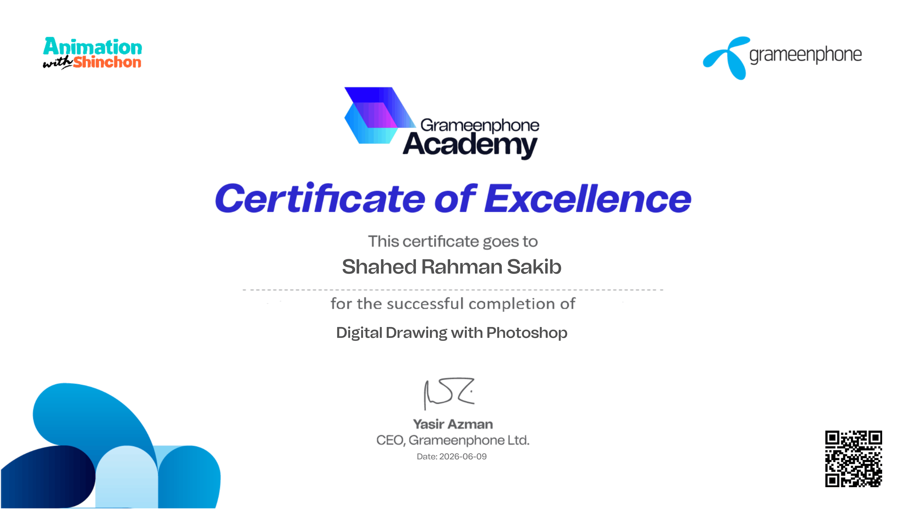

MD Shahed Rahman Sakib
I train explainable deep learning models for dental radiographs and crop diseases, turning research into practical tools.
Computer Science & Engineering graduate from Dhaka International University. My research centers on multi-class dental OPG disease classification using EfficientNetV2S and Smooth Grad-CAM, alongside an 8-class mango leaf disease detection system.

Peak test accuracy on 5-class dental OPG classification via EfficientNetV2S
Crown, Healthy, Missing Teeth, Root Canal Treatment & Root Piece
End-to-end computer vision pipeline for mango leaf disease categorization
Grad-CAM with bicubic interpolation & Gaussian blur for clinical clarity
Explainable medical imaging & vision research
Conducted at Dhaka International University (Jan – Nov 2026) with a focus on transfer learning, multi-backbone benchmarking, and Smooth Grad-CAM visual localization.
Department of CSE, Dhaka International University
Supervised by Md. Toufiqur Rahman, Lecturer
Explainable Deep Learning Framework for Multi-Class Dental Disease Detection Using EfficientNetV2S and Grad-CAM
Built an end-to-end deep learning framework on dental OPG radiographs resized to 384×384 across five clinical pathology categories: Crown, Healthy, Missing Teeth, Root Canal Treatment, and Root Piece.
| Architecture | Input / Split | Role in Study | Explainability |
|---|---|---|---|
| EfficientNetV2S (Peak: 89.01%) | 384×384 (70/15/15) | Primary fine-tuned backbone with AdamW | Smooth Grad-CAM |
| ConvNeXt-Tiny | 384×384 (70/15/15) | Modern ConvNet benchmark baseline | Comparative Eval |
| DenseNet121 | 384×384 (70/15/15) | Dense feature-reuse medical baseline | Comparative Eval |
| ResNet50 | 384×384 (70/15/15) | Standard residual network baseline | Comparative Eval |
- • Smooth Grad-CAM Localization: Integrated bicubic interpolation and Gaussian blur onto Grad-CAM heatmaps to produce smooth, clinically interpretable region overlays on dental radiographs.
- • Comprehensive Diagnostic Metrics: Evaluated accuracy, macro-averaged ROC-AUC, F1-score, precision, recall, confusion matrices, and false positive rates across consistent splits.
Leakage-Free Splitting
Maintained disciplined train/validation/test separation (70/15/15) so model performance reflects generalization rather than data leakage.
Smooth Visual Explanations
Bicubic interpolation and Gaussian smoothing refine raw saliency maps to highlight tooth structures, crowns, roots, and restorations cleanly.
Applied Computer Vision
Translating deep learning architectures into accessible tools for both clinical research analysis and agricultural leaf disease screening.
Computer vision pipelines & deployed apps
End-to-end vision systems covering 8-class mango leaf disease detection and categorization.
8-Class Agricultural Diagnostics
Deep Learning-Based Mango Leaf Disease Classification Using Custom Convolutional Neural Networks and Fine-Tuned ResNet50
An end-to-end deep learning framework for automated 8-class categorization of mango leaf diseases. Evaluates a lightweight Custom Deep CNN built from scratch against a fine-tuned ResNet50 transfer learning model, deployed as a real-time Streamlit diagnostic web app[cite: 10, 15].
validation accuracy on Custom CNN (99.25% train)[cite: 12, 15]
parameters (~1.75 MB), 51× lighter than ResNet50[cite: 11, 12, 15]
high-res images across 8 classes (70/15/15 split)[cite: 10, 15]
validation loss after 40 epochs with Cosine Decay[cite: 11, 12, 15]
Stratified split: 2,800 train / 600 validation / 600 test images with Keras dynamic flips, ±20° rotation, zoom, and contrast layers[cite: 10, 15].
- — Custom CNN outperforms heavy transfer learning. A 4-block Conv2D architecture (32→64→128→256 filters) with BatchNorm, GlobalAveragePooling2D, and Cosine Decay (5×10⁻⁵) reached 99.67% validation accuracy at just 1.75 MB[cite: 11, 12, 15].
- — Optimized tf.data ingestion pipeline. Standardized 224×224×3 input tensors with parallel prefetching (AUTOTUNE, batch size 16) and dynamic Keras preprocessing layers to prevent overfitting[cite: 10, 11, 15].
- — Instant browser-based leaf diagnostics. Deployed on Streamlit Cloud so farmers and researchers can upload leaf photos and receive immediate pathology predictions without local GPU setup[cite: 10, 15].
5-Class Dental OPG Classifier & Smooth Grad-CAM
Deep learning training, multi-architecture comparison (EfficientNetV2S, ConvNeXt-Tiny, DenseNet121, ResNet50), and Smooth Grad-CAM heatmap pipeline for dental X-rays.
Experimentation & Evaluation Pipelines
Structured notebooks and training workflows for image augmentation, metric logging (ROC-AUC, F1, confusion matrix), and model error analysis.
What I build with
Internship & corporate experience
Machine Learning & Data Science Intern
Datheon — AI Systems & Automation Studio
Completed hands-on internship training in machine learning workflows, data preparation, and model evaluation in collaboration with MISAC.
Sales Executive
Tasty Treat — PRAN-RFL Group
Managed retail sales execution, daily stock and inventory tracking, customer coordination, and operational reporting under PRAN-RFL Group.
Academic background
Academic records across undergraduate studies, Higher Secondary Certificate (HSC), and Secondary School Certificate (SSC).
B.Sc. in Computer Science & Engineering (CSE)
Dhaka International University (2026)
Higher Secondary Certificate (HSC)
Govt. Shahid Sohrawardi College (2021)
Secondary School Certificate (SSC)
Khilgaon High School (2019)
Verified credentials & workshops

Datheon Internship Certificate
Datheon • Click to preview

Kaggle Certification
Kaggle • Click to preview

Grameenphone Academy Certificate
Grameenphone Academy • Click to preview